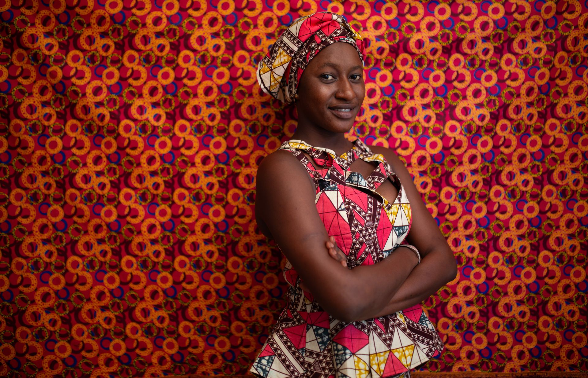

House Collection
Africa Reframed’s own collection: 1,122 images made in our own productions, alongside photography workshops in Mali, Kenya and The Gambia.

AR-2002 · Banjul, The Gambia Photo: Africa Reframed
Licensed across sectors
- 548licences
- 46countries
Before the archive, images from our productions were licensed through Getty Images by institutions, companies and media.
In 2025 we took them back, so that they serve one purpose: to carry this picture of Africa into the work of organisations that work with the continent.
Institutions
- United Nations
- World Bank
- European Investment Bank
- Gates Foundation
- British Council
Technology and telecom
- Microsoft
- Apple
- Samsung
- Spotify
- Uber
- Orange
- MTN
- Airtel
- Vodacom
- Safaricom
- AT&T
- Yahoo
- AOL
- ASUS
- NEC
Business and finance
- VISA
- HSBC
- Barclays
- Western Union
- McKinsey
- Deloitte
- KPMG
- Accenture
- Lloyds Bank
- EY
- Ogilvy
- M&C Saatchi
- Pfizer
- 3M
- UPS
- Virgin
- Del Monte
Media and publishing
- BBC
- NBC
- The Guardian
- The Washington Post
- Condé Nast
- Hearst
- Pearson
- Oxford University Press
- ABC
- CNBC
- Time Inc.
- Axel Springer
- Discovery
- Viacom
- RTL
- Cambridge University Press
- McGraw-Hill
- Heinemann
- Random House
1 / 16
Draft wording, for Thomas. 56 names in four sectors, four at a time; the arrows run through all of them. Source: the Track Record’s list of Getty licensees. Left out: Amazon and Google (marked to confirm there), Exxon and Shell.
Explore by theme
The themes follow one story: people learn, put their skills to work, live connected lives in modern cities, and make culture.
- Learning198 images
- Work and enterprise279 images
- Everyday digital354 images
- City life237 images
- Creativity and culture137 images
Learning
Classrooms, campuses, training kitchens and homework at home: people of every age building skills for the work ahead.


Photo: Africa Reframed
Work and enterprise
Tradespeople, cooks, farmers, shopkeepers and young professionals making a living with skill.


Photo: Africa Reframed
Everyday digital
Phones, laptops and money on a screen: work, study and keeping in touch as a normal part of the day.


Photo: Africa Reframed
City life
Cafés, campuses, rooftops and busy streets: the everyday rhythm of Bamako, Banjul and Nairobi.


Photo: Africa Reframed
Creativity and culture
Portraits, style and street art.


Photo: Africa Reframed
Made by our own team
The House Collection is Africa Reframed’s own collection: 1,122 photographs made by our team between 2013 and 2018, in 21 shoots in Mali, Kenya and The Gambia, alongside photography workshops in Bamako, Nairobi and Banjul.
The images show people at work, at study and at home in three modern cities and the countryside around them, photographed in natural light, in their own places. They are released for the uses the archive allows and carry one credit: Photo: Africa Reframed.
Sponsoring a collection? Write to partnerships@africareframed.com.